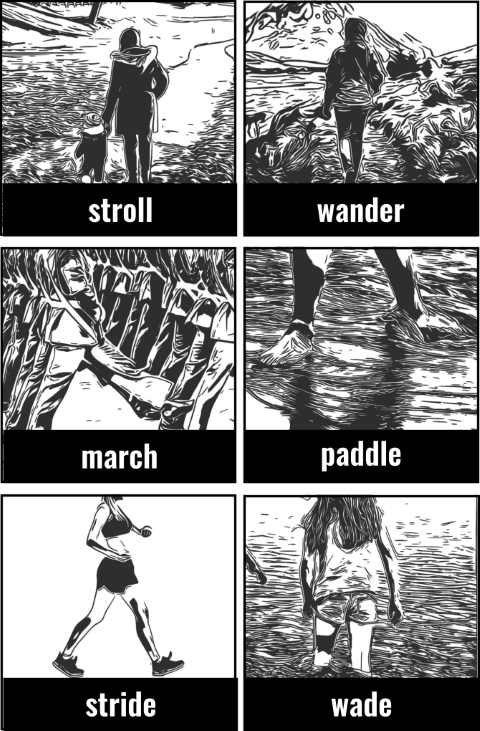

QUICKLY stride: to walk quickly, taking large steps esp. because you feel confident, angry, determined or in a hurry. march: to walk quickly with firm steps esp. because you feel angry or determined. pace: back and forth / up and down / the room / the floor. To walk backwards and forwards within a small area esp. when you are nervous, angry or bored. dart / dash: to move suddenly and quickly.
SLOWLY & RELAXED stroll: to walk for pleasure in a slow relaxed way. amble across/along/over/towards: to walk in a slow and relaxed way esp. when you are not going anywhere in particular. saunter: to walk leisurely and with no apparent aim. loiter: to move slowly or keep stopping when you should be going forward. Wait around without apparent purpose.
SLOWLY & IN PAIN OR TIRED hobble: to walk with difficulty, slowly and unsteadily because it is painful to do so. limp: to walk slowly and with difficulty, putting more weight on one leg because the other hurts or it is injured. shuffle: to walk slowly or noisily without lifting your feet esp. because old age, or because you’re wearing loose shoes. drag along: move along too slowly or with difficulty. traipse: walk or move wearily or reluctantly.
UNSTEADILY stagger: to walk unsteadily with your body moving from side to side, almost falling esp. because you’re injured, very tired or drunk. lurch: to walk very unsteadily as if unable to control one’s movements. stumble: to walk unsteadily, often hitting things with your feet and almost falling, esp. because it is dark, the ground is uneven, or because you are tired or drunk. reel: + adverb / preposition. To walk in an unsteady way, moving from side to side as if drunk. toddle: to walk with short unsteady steps as a small child does.
QUIETLY sneak: to walk quietly trying to hide from sb esp. because you don’t want to be caught. creep: to walk quietly, slowly and carefully esp. so no one notices you. tiptoe: to walk with the tip of your toes because you want to avoid making noise. lurk: to move or wait in ambush quietly or secretly. slink in / out: to walk quietly, secretly, stealthily. sidle up: to move quietly towards someone, trying not to be noticed, so that they do not realize you are there until you are next to them.
NO DIRECTION prowl: to quietly walk around an area or building trying not to be seen esp. in order to steal or attack. roam (around / about): to walk around freely with no particular aim. wander: to walk around with no particular aim or destination, with no particular direction.
TO EXERCISE trek: to make a long and difficult journey. hike: to take a long walk in the countryside.
THROUGH WATER paddle: to walk with bare feet in shallow water. wade: to walk through deep water.
PROUDLY strut: to walk proudly with your head high, shoulders back and chest forwards showing you think you are important or impressive. swagger: to walk too confidently.
HEAVILY trudge: to walk heavily and firmly, as when tired, or through mud. plod: walk with heavy steps esp. because the ground is difficult or you are carrying sth heavy.